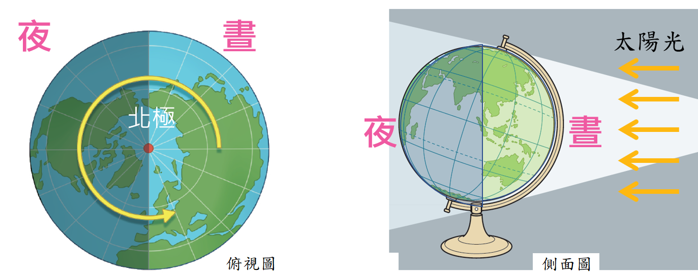
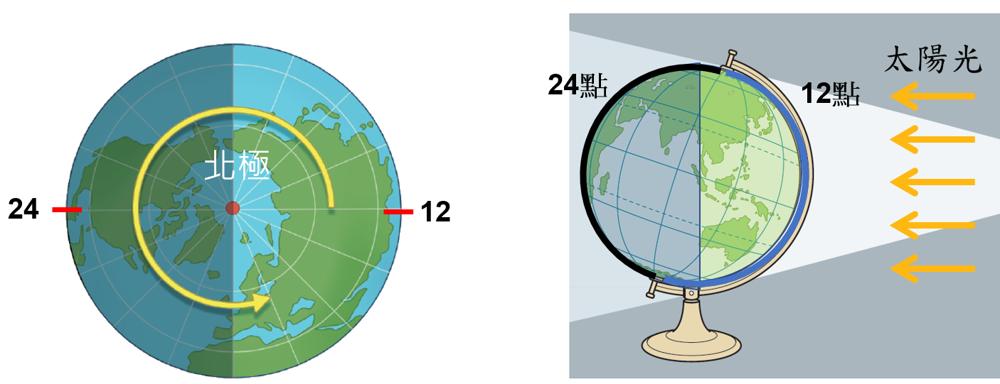
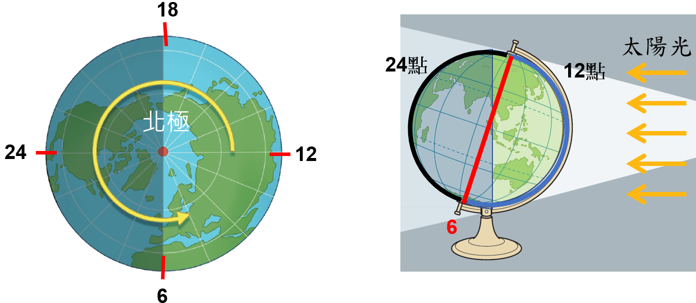

由北極上空往下俯瞰，地球以通過南北極的自轉軸為中心，依逆時鐘方向自轉； 由赤道上空往下俯瞰，為由西向東自轉， 而地球自轉一周的時間為一日。
🌎 宇宙的浩瀚：地球自轉現象學習頁面
🔄 地球自轉方向

圖1：地球自轉方向 (檔名: 1.png)
🕛 一天24小時與經度
經度和時間有相當密切的關係， 陽光直射的經度為一天的中午12時（正午）， 反之，背對太陽的經度為一天的夜晚12時(24時)。

圖2：經度與時間關係 (檔名: 2.png)
⏳ 依自轉判斷時間點
依地球逆時針自轉（由西向東），即可判斷一天的6時、18時等其他時間點。 例如：過了中午12時，在地球逆時針轉向黎明線（日出）前90°的經線上，為下午6時（18時）。

圖3：自轉與時間點判斷 (檔名: 3.png)

動畫：地球自轉-24小時 (檔名: 地球自轉-24小時.gif)
🧠 互動練習題
請完成以下所有題目，以解鎖下一頁。
Q1. 由北極上空俯瞰，地球自轉的方向為何？
Q2. 陽光直射的經度線代表當地時間為一天的夜晚12時(24時)。
Q3. 地球自轉一周所需要的時間是多久？ (請填寫中文，例如: 一小時)
Q4. 若將地球自轉一周視為360°，則每小時地球自轉的經度角是多少？